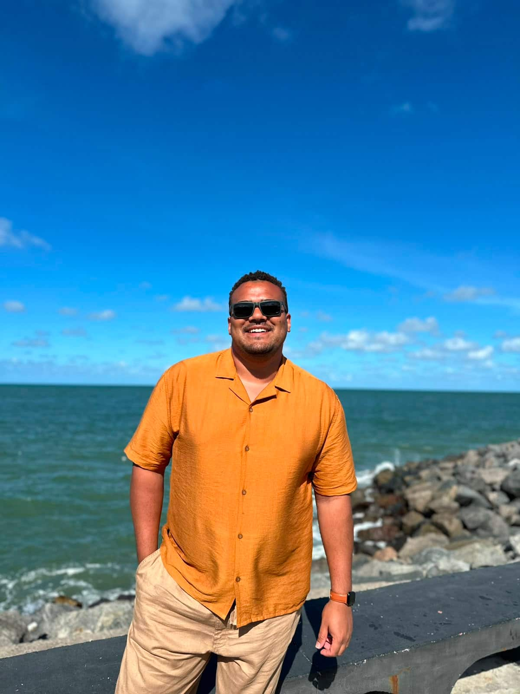
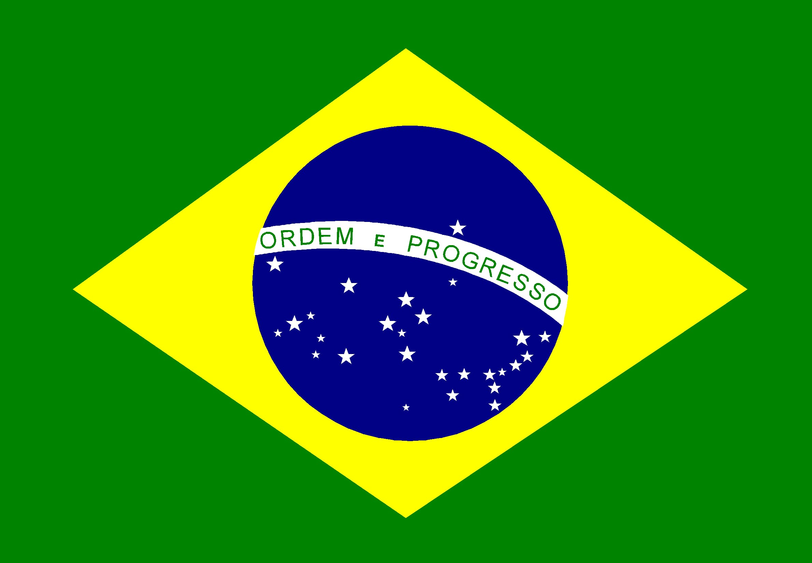

Gabriel Wallace Soares dos Santos
Sobre Mim

Meu nome é Gabriel Wallace. Moro no Brasil e atualmente estudo Desenvolvimento Web. Gosto de tecnologia, estudar, servir e de aprender novas habilidades.
Brasil

O Brasil é o maior país da América do Sul, conhecido por sua diversidade cultural, belas paisagens e pelo futebol. Sua capital é Brasília e o idioma oficial é o português.